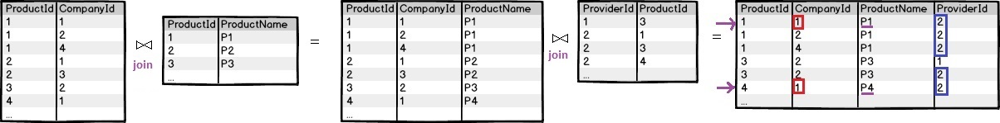
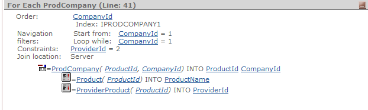

When you need to solve queries that imply navigation over different tables that are difficult to express using n For Each commands, as well as queries that cannot be solved in a single SQL sentence, it is possible to add more than one Base Transaction in a For Each command.
where:
<Trni>: the name of a transaction or level (i.e. <TRNi>.<level_name>).
<mainCode>: the code to be executed for each record in the join or cartesian product of the base TRN tables. If the tables (TRN1, TRN2, ..., TRNm) are directly related (or you define an explicit filter by equality between two different attributes), then a join is made among the tables associated with these transaction levels. Otherwise, a cartesian product is done, or if no relation can be found, then a specification error will occur (spc0027).
Note: The type of join is determined depending on the nullability of the attributes of the relation. If any of them is nullable, the type of join is outer, otherwise, it's an inner join.
Consider a multi-company system where we know the products sold by each Company and distributed by each Provider.
The structures would be as follows:
Product
{
ProductId*
ProductName
}
Company
{
CompanyId*
CompanyName
}
Provider
{
ProviderId*
ProviderName
}
ProdCompany
{
CompanyId*
ProductId*
}
ProviderProduct
{
ProviderId*
ProductId*
}
In this scenario, suppose that you want to list all the products sold by a certain company and distributed by a certain provider. The query may not be solved using only one For Each command unless the base TRN clause in the For Each command admitted declaring more than one base transaction.
For Each ProdCompany, ProviderProduct Where CompanyId = 1 Where ProviderId = 2 Print ProductInfo //printblock with ProductName attribute Endfor
E.g: If you are filtering by CompanyId = 1 and ProviderId=2, with the following data, P1 and P4 will be displayed:

Below you can see the navigation that corresponds to the previous code:

In this particular example, the SQL sentence (for SQL Server) is as shown below. Note that a join is made using the ProductId attribute:
SELECT T1.[ProductId], T3.[ProviderId], T1.[CompanyId], T2.[ProductName] FROM (([ProdCompany] T1 WITH (NOLOCK) INNER JOIN [Product] T2 WITH (NOLOCK) ON T2.[ProductId] = T1.[ProductId]) INNER JOIN [ProviderProduct] T3 WITH (NOLOCK) ON T3.[ProductId] = T1.[ProductId]) WHERE (T1.[CompanyId] = 1) AND (T3.[ProviderId] = 2) ORDER BY T1.[CompanyId]
Note: Consider Filters As Hint as another way to solve the previous example.
In the same scenario, now suppose that you want to list the combination of Companies and Providers which sell the same product. The code to solve this is:
For Each ProdCompany, ProviderProduct Print CompanyAndProviderNames //printblock with CompanyName, ProviderName attributes Endfor
And if you want to list the combination of Companies and Providers which sell a given product:
For Each ProdCompany, ProviderProduct Where ProductId = &ProductId Print CompanyAndProviderNames //printblock with CompanyName, ProviderName attributes Endfor
Consider the following transaction structures:
Transaction1
{
A*
B
C
}
Transaction2
{
D*
E
}
In that scenario, where there is no relationship between B and D (their names are different and they are not subtypes), if you define a For each like the following:
For each Transaction1 ,Transaction2 where B = D print printblock1 //printblock with C and E attributes endfor
where Transaction1 and Transaction2 are declared as base transactions and an explicit filter by equality between B and D attributes is defined, then a join is made among the tables associated to Transaction1 and Transaction2.
In this particular example, the SQL sentence (for SQL Server) is generated as shown below:
SELECT T2.D, T1.B, T1.C, T2.E, T1.A FROM Transaction1 T1, Transaction2 T2 WHERE T1.B = T2.D ORDER BY T1.A.
Note that the previous examples could not be solved using a single For Each command unless you use a clause declaring multiple base TRNs.
Listing a Cartesian product of tables is not desirable in general, but there are some circumstances where it's needed, and it's difficult to model using For Each commands in GeneXus.
By means of the base TRN clause of the For Each command, it can be done in a very intuitive manner.
Consider the following Transactions structures:
User
{
UserId*
UserName
UserType
}
Program
{
ProgramId*
ProgramName
}
Suppose that you need to list the Cartesian product of the User and Program tables filtering by the administrator user (the administrator user has access to all the programs). Using multiple base TRN clauses in the For Each command the code would be as follows:
For Each User, Program Where UserType = 'Administrator' Print UserAndProgramNames //printblock with UserName, ProgramName attributes Endfor
| Backlinks | |
| Base Transaction clause | Command to retrieve information from database |